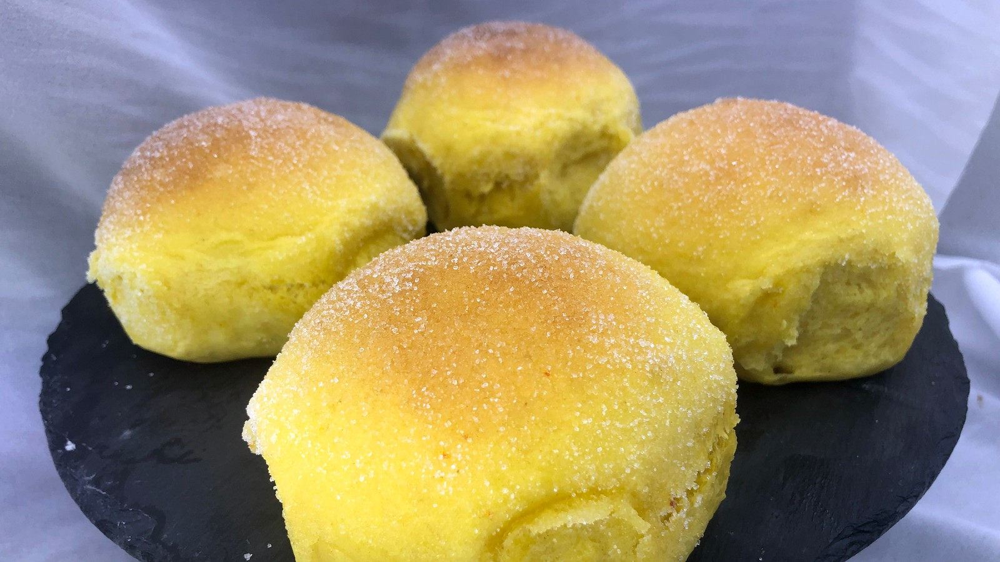

Sukrede safranboller i langpanne
Ingredienser
- 25 g fersk gjær (rød eller blå)
- 0,5 liter lettmelk
- 150 g sukker
- 0,25 g safran
- 0,5 ts salt
- 1 ts bakepliver
- 1 ts vaniljesukker
- 1 kg hvetemel (omtrent)
- 1 egg
- 150 g smør
- 50 g smør
- 100 g finkornet/engelsk sukker
Slik gjør du
- Kutt opp smøret i små terninger og legg terningene utover
på en tallerken slik at de blir helt romtemperert.
- Bland cirka halvparten av melet med bakepliver,
vaniljesukker, puliverisert safran og salt i en bolle.
- Varm opp melken til den er cirka 37 grader. Rør inn
sukkeret i melken. Smlidre gjæren i melken, og rør til all
gjæren er oppløst. Bland melken inn i melblandingen og elt
godt.
- Tilsett litt og litt mel til deigen så vidt slipper
kanten. Det skal bli en myk deig som ikke er klissete, men
ikke bruk mer mel enn nødvendig. Elt videre i minst 10
minutter, gjerne 15. Bruk helst en kjøkkenmaskin.
- Tilsett egget og elt litt videre. Tilsett smøret gradvis i
deigen, elt videre i 6-7 minutter til du har en fin og jevn
deig. Hvis deigen er litt for klissete nå, så tilsett litt
mer mel. Ønsket konsistens er at den skal være bitte litt
klissete på fingrene.
- Del opp deigen i 24 like emner og fordel disse på et
bakepapirkledd stekebrett. Bollene kommer til å heve litt
inni hverandre, men det gjør dem ekstra saftige og gode.
- Etterheves i cirka 30 minutter før du steker dem på 200 grader
midt i ovnen i cirka 12 minutter. Jeg liker bollene best når
de ikke er for mørke.
- Avkjøles på rist. Når bollene er helt avkjølte løsnes de fra
hverandre. Pensle bollene med smeltet smør og rlil dem i
sukkeret. Hev til dobbel størrelse på et lunt og trekkfritt
sted.

Gå hjem